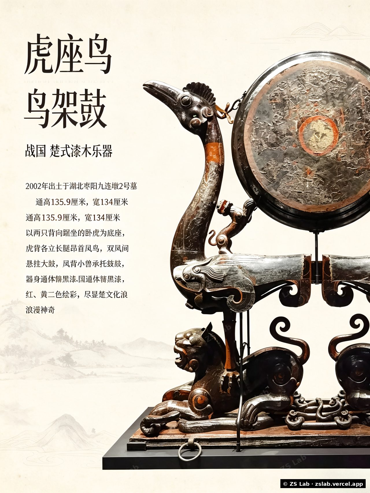

ZS Lab
把重复的活交给流程，把需要判断的活留给人。我做 AI 自动化、内容生产和硬件落地—— 从想清楚，到做出来，到上线跑起来，一个人走完整条路。
$ what_can_i_build_for_you # 能接的活 → ai_workflow 流程自动化 / Agent 编排 → content_line 公众号 · 视频号 · 图文 → demo_deck 方案书 / 演示视频 → hardware 嵌入式固件 / 技术文档 > next: your_project ? 等你开口 READY [] taking work
能做什么
流程自动化
把每天重复的动作串起来自己跑——邮件分类、数据抓取、报表生成、内容分发。n8n、Agent 编排、脚本都行，交付的是能长期跑的流程，不是一次性演示。
AI 应用落地
让模型干具体的一件事：询盘分析、资料核查、客服前置、批量生成。不做炫技的 demo，做能塞进你现有流程的那一版。
内容生产
公众号长文、视频号口播稿、图文贴图、封面设计。从选题到排版到发布包，一条线走完，不是丢给你一个模板。
硬件与文档
ESP32 / STM32 固件、打样验证、装配调试、技术文档体系。从电路板一路做到验收规范，现场踩过的坑不用你再踩一遍。
关于
我是 ZS。这几年在硬件工程和 AI 工具之间来回横跳：舞台机械的现场调试、消费级硬件的全生命周期、 现在用大模型把重复劳动标准化。中间踩过的坑，比写过的代码还多。
这段经历给我两样东西：看得懂现场，也写得出代码。所以我做活的习惯是—— 先弄清楚你真正要的是什么，再动手；东西做出来要能跑，跑不了就改到能跑。
独立接活
把 AI 自动化、内容生产、硬件三件事拧成一条能交付的线，一个人从方案做到上线。
智能硬件工程
消费级硬件产品全生命周期交付，从装配调试到技术文档体系。
硬件系统工程
千万级舞台机械项目现场实施与系统调试，跨领域迁移到嵌入式方向。
AI 工具链探索
用大模型把重复劳动标准化——工作流自动化、内容生成、数据处理。
创业与运营实践
从零搭建过零售门店与加盟体系，积累了从 0 到 1 的商业落地经验。
作品
博物馆展陈 3D 可视化
把文物转化为可交互的粒子场景——「赛博考古：数字遗产粒子交互系统」。下方为脱敏展示（已加水印）。

人生复利系统 · 游戏化看板
把「每天想点开」做成一个单页应用：勾事得经验、大项目拆成原子步、日历热力图看一年。纯前端零依赖，数据存在自己浏览器里，现在线上在跑。
AI 邮件分类工作流
n8n 搭的三分类收件箱流程：该回的、该看的、该丢的自动分好。只起草不代发——每封回复都留给人看过再走下一步。
双源核查工具
一句话拆成可核验的命题，分别查古籍里到底有没有、现代权威怎么说，给五档结论并附出处。查不到就直说查不到。
麦门省钱助手
给人数、预算和口味，算出一单最划算的组合。一个把 API 拼起来解决具体小事的例子。
智能硬件技术文档体系
从装配 SOP 到验收规范，覆盖 100+ 台设备的多项目文档交付。把老师傅脑子里的东西写成新人能照着干的东西。
技能
AI 工具链
嵌入式 & 硬件
硬件工程
Web & 部署
从零到一
聊聊
说说你手上那件想自动化、想做成内容、或者想做出来的事。说清楚卡在哪，我回得快一点。